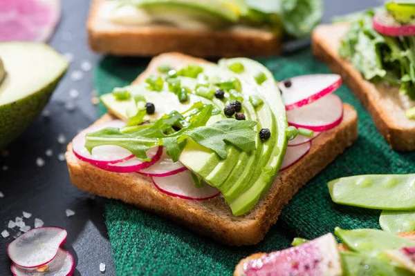
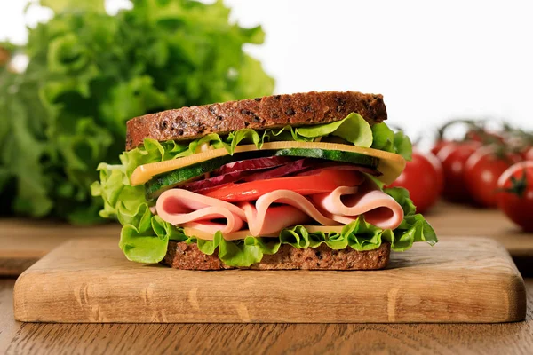

Bolos Simples
Some representative placeholder content for the first slide.

Bolos Decorados
Some representative placeholder content for the second slide.

Tortas Doces
Some representative placeholder content for the third slide.